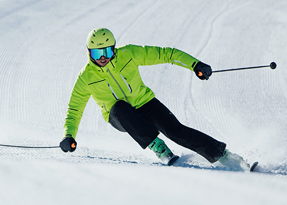
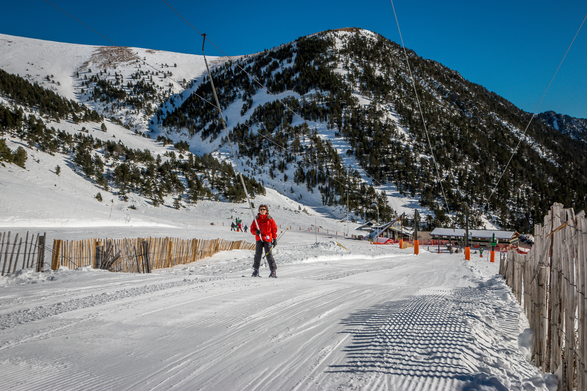
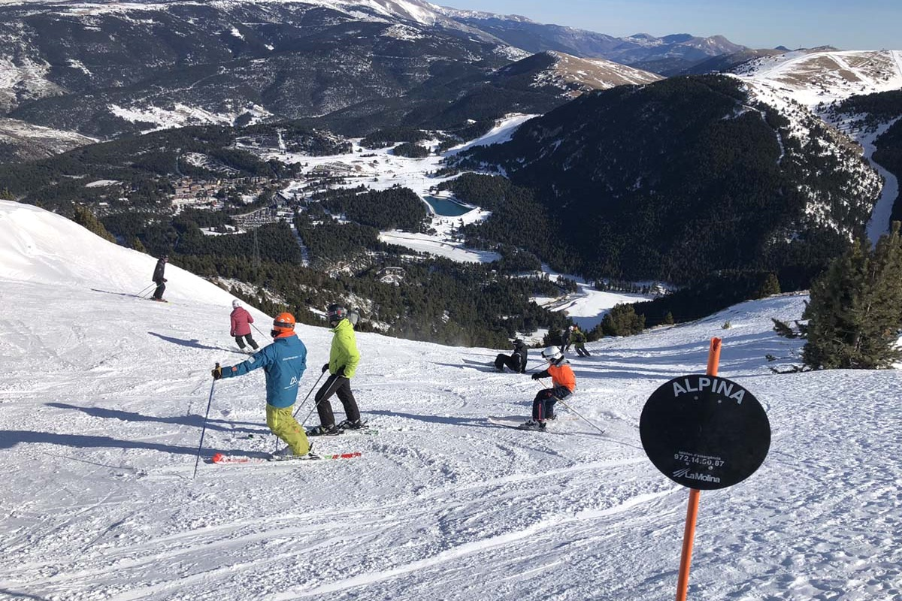
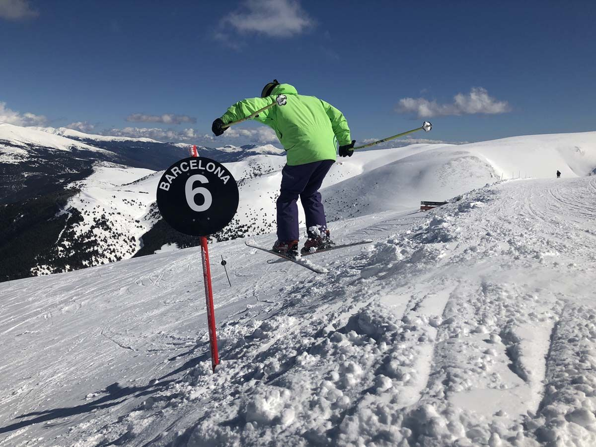
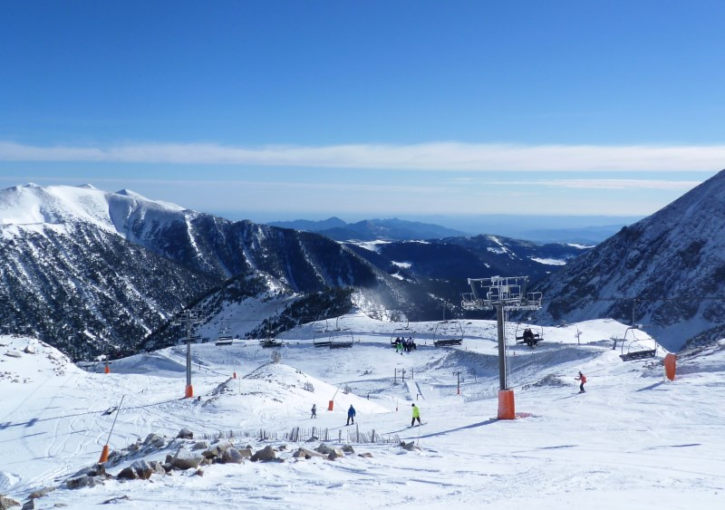
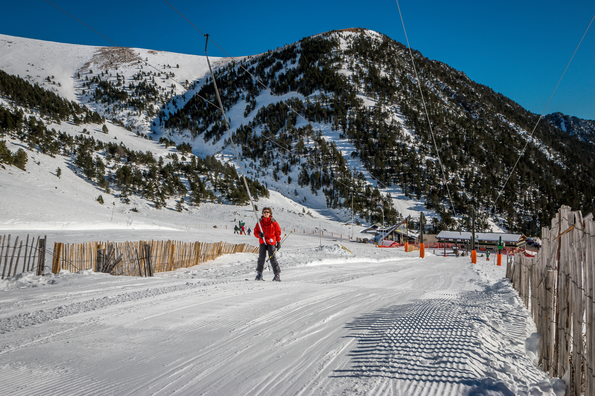
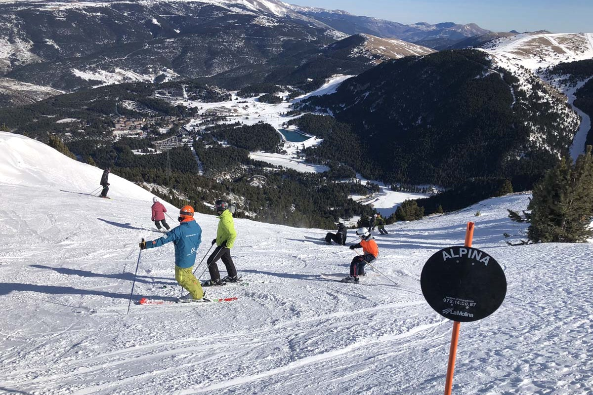
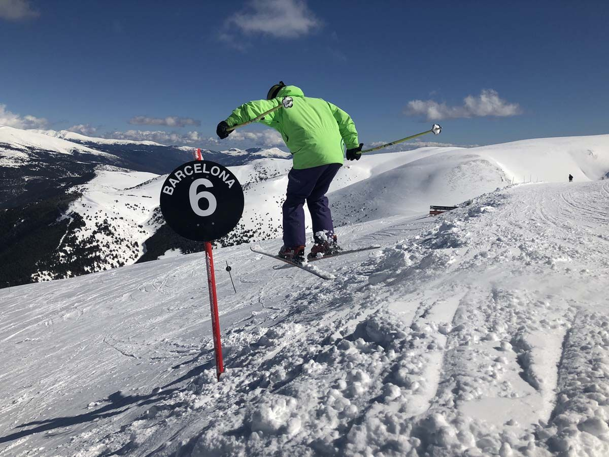
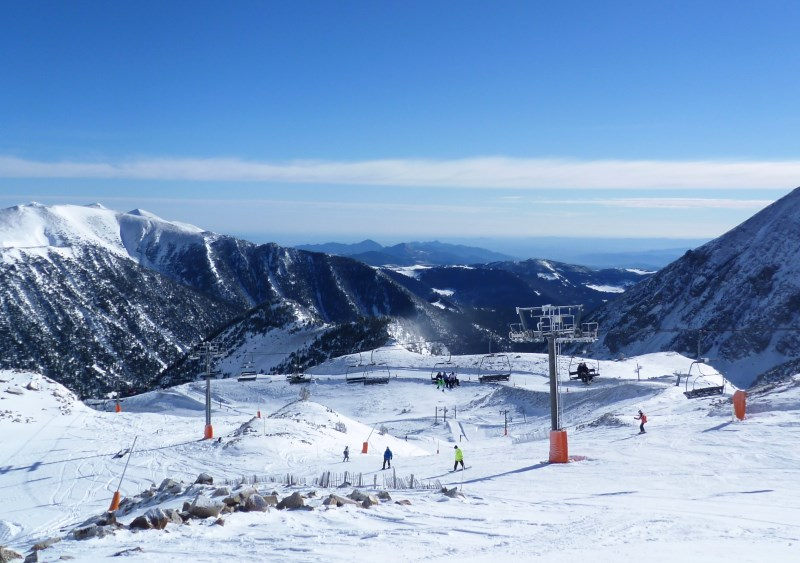

SOBRE ESQUÍ:
QUE ES :
L'esquí és una emocionant activitat hivernal que consisteix a lliscar sobre la neu utilitzant uns esquís especials als peus. És molt més que un esport; és una passió que ens porta a les majestuoses muntanyes invernal. L'esquí implica destresa, equilibri i una connexió íntima amb la natura. És una oportunitat per experimentar la llibertat i l'aventura mentre ens desplacem ràpidament per les pistes nevades. Ja siguis un principiant o un expert, l'esquí ofereix una oportunitat única per gaudir de la neu i les muntanyes com cap altra cosa. Descobreix amb nosaltres tot el que cal saber sobre aquesta meravellosa activitat i comença a gaudir del plaer de l'esquí."

PISTES:
Vallter 2000
Vallter és l’estació d’esquí més oriental dels Pirineus catalans. Està situada a la comarca del Ripollès, al municipi de Setcases. Des de la seva cota més alta (2.535 metres) s'arriba a veure en dies clars la mar Mediterrània. Està situada en un entorn únic, amb paisatges d’una bellesa incomparable al bell mig del circ d’origen glacial de Morens-Ull de Ter i a 2.000 metres d’altitud sobre la vall del riu Ter, dins del Parc Natural de les Capçaleres del Ter i del Freser i paisatges increïbles d’alta muntanya.

La Molina
La Molina, situada als Pirineus Catalans d'Espanya, és una de les estacions d'esquí més antigues i respectades al país. És especialment popular entre les famílies i els esquiadors principiants i intermedis a causa de la seva varietat de pistes suaus i escoles d'esquí. A més, La Molina és coneguda per la seva accessibilitat i serveis, incloent-hi una bona xarxa de remuntis. Encara que no és tan extensa com altres estacions més grans, la seva atmosfera acollidora i la bellesa del paisatge fan que sigui un destí molt atractiu.

Baqueira Beret
Baqueira Beret , també als Pirineus espanyols, és reconeguda per ser una de les estacions d'esquí més grans i luxoses d'Espanya. Ofereix una àmplia varietat de pistes que atreuen tant a esquiadors principiants com a experts. Baqueira és coneguda per la seva neu d'alta qualitat, extenses pistes i moderns remuntis, a més de la seva vibrant vida nocturna i opcions gastronòmiques. És un destí popular entre els esquiadors que busquen una experiència d'esquí d'alta gamma a Espanya.

Val Thorens
Val Thorens, situada als Alps francesos, és l'estació d'esquí més alta d'Europa i forma part dels Trois Vallées, la major àrea esquiable del món. És famosa per tenir una temporada d'esquí llarga i de confiança, gràcies a la seva alta altitud. Val Thorens atreu a una multitud internacional i ofereix pistes per a tots els nivells d'habilitat, amb una excel·lent infraestructura i serveis. A més, és coneguda per la seva animada vida nocturna i activitats tant dins com fora de les pistes, la qual cosa la fa popular entre els joves i aquells que busquen una experiència d'esquí completa i vibrant.

 






